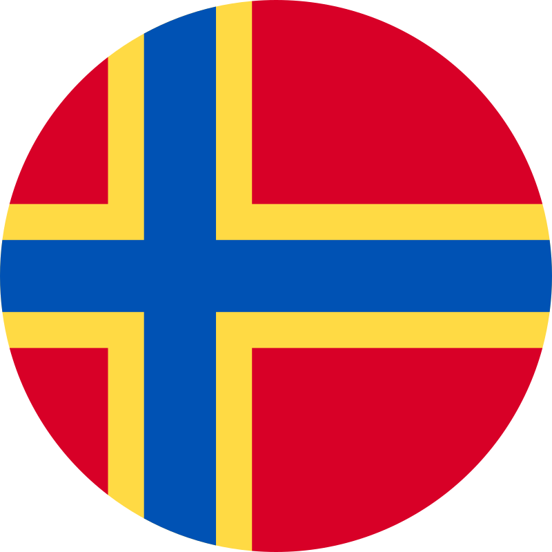

| Question / Topic 問題／主題 | 🏴 England 英格蘭 |
 Scotland 蘇格蘭 |
🏴 Wales 威爾斯 | 🇬🇧 Northern Ireland 北愛爾蘭 | Exams |
|---|
All questions & answers from Exams 1–17 · UK Four Regions & Historical Timeline · 英國入籍試備考指南
| Question / Topic 問題／主題 | 🏴 England 英格蘭 |
 Scotland 蘇格蘭 |
🏴 Wales 威爾斯 | 🇬🇧 Northern Ireland 北愛爾蘭 | Exams |
|---|